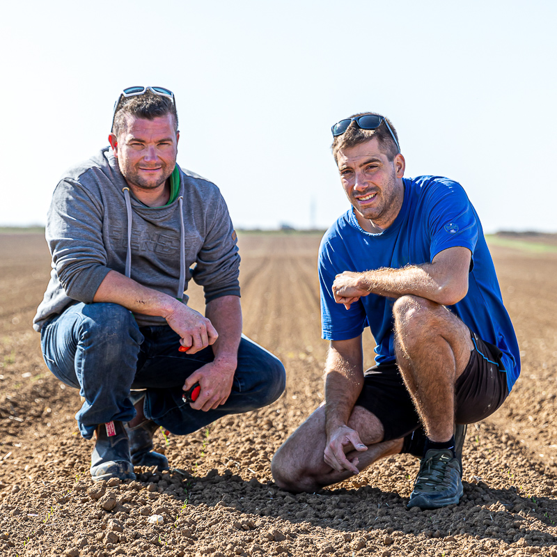
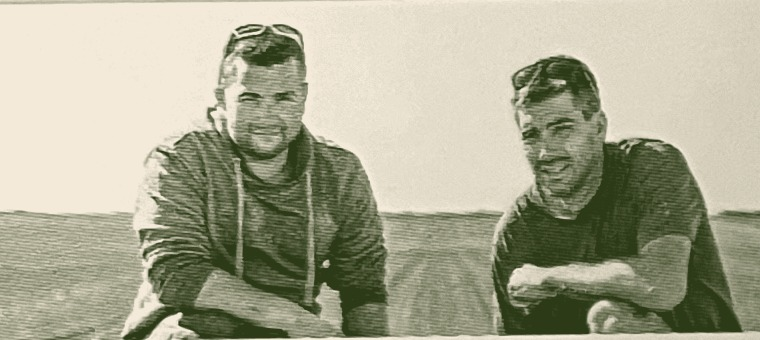
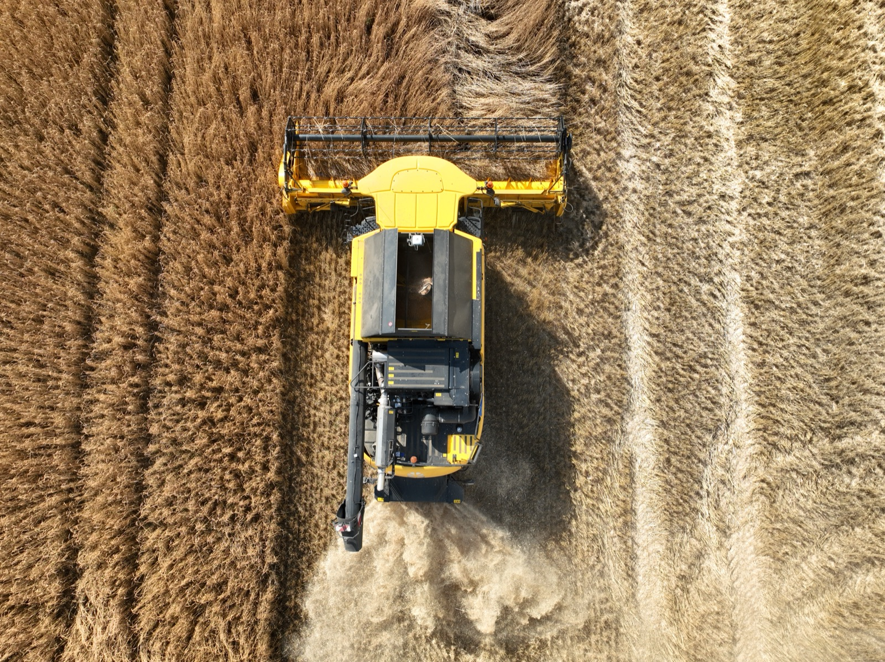
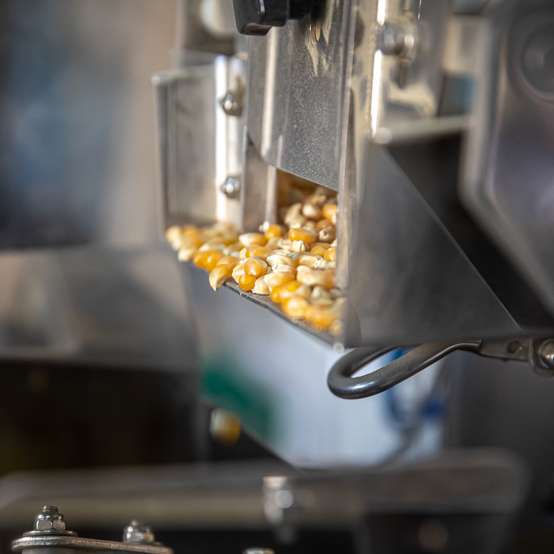
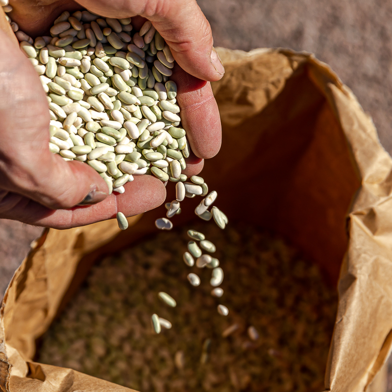
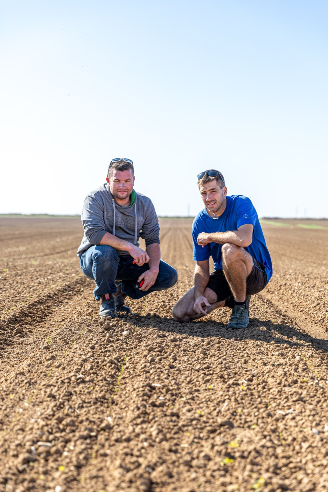
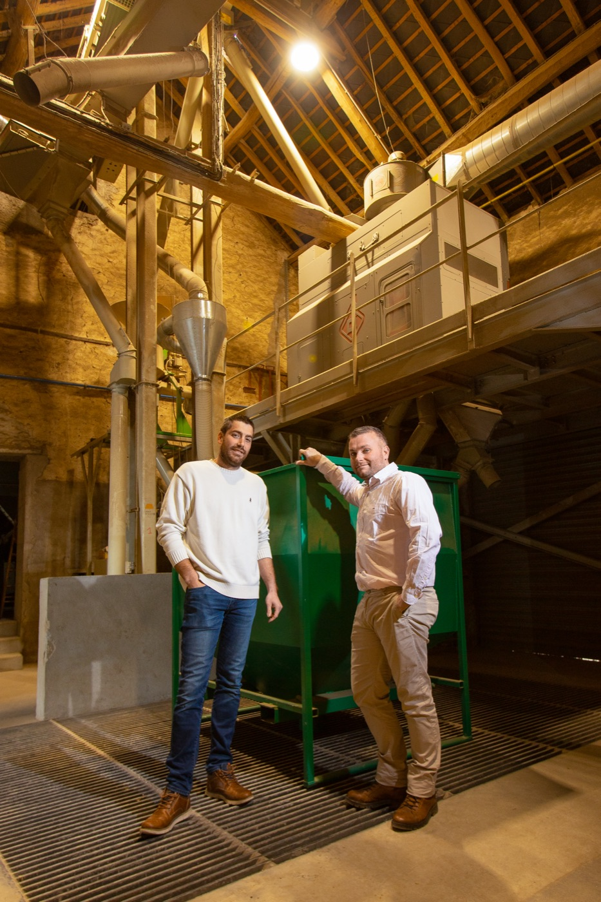

Bio et certifications
100% de notre exploitation est certifiée Agriculture Biologique (FR-BIO-01). Nous sommes également reconnus « Artisans Militants de la Qualité » et « C du Centre — Produit en région ».
Depuis 6 générations, Jérémy et Jonathan cultivent 142 hectares en agriculture biologique au cœur de la Beauce. Découvrez notre histoire et nos engagements.

Entreprise familiale depuis 6 générations, la Ferme des 3 Rois est une exploitation de 142 hectares située au Puiset, en Eure-et-Loir, au cœur de la Beauce. Jusqu'en 2018, Jean-Louis Desforges y cultivait des céréales. Ses fils, Jérémy et Jonathan, partageaient le projet de convertir l'exploitation en agriculture biologique : leur père a préparé la ferme avant de leur céder la place. Après trois années de conversion, la Ferme des 3 Rois a reçu le label Agriculture Biologique en 2020.
Jérémy et Jonathan ont ensuite élargi l'offre : aux céréales de pleine Beauce, ils ont ajouté des légumes secs et d'autres protéines végétales. Leur idée : comprendre la terre, anticiper ses problématiques et réfléchir à une gestion plus vertueuse, meilleure pour l'environnement et pour la santé. Ainsi est née la marque Trésors de Beauce (légumineuses, céréales, oléagineux et herbacées), 100% Agriculture Biologique et Haute Valeur Environnementale, vendue en direct aux professionnels sous le nom Ferme des 3 Rois.
« Depuis 6 générations, à la Ferme des 3 Rois, nous perpétuons le travail de la terre avec passion et amour. Nous cultivons nos céréales, graines et légumineuses en 100% biologique afin de respecter l'environnement et notre terre. »
— Jérémy & Jonathan, agriculteursCertifications, agriculture durable, circuit local et impact environnemental : découvrez les piliers de notre engagement paysan.

100% de notre exploitation est certifiée Agriculture Biologique (FR-BIO-01). Nous sommes également reconnus « Artisans Militants de la Qualité » et « C du Centre — Produit en région ».

Rotation des cultures, fertilisation naturelle, préservation des sols et de la biodiversité : une haute technicité bio pensée pour durer.

Notre transformation est réalisée à la ferme, sur une chaîne de tri de pointe, puis vendue en circuit court en Eure-et-Loir, en région Centre et en Île-de-France.

Emballages 100% home-compostables ou recyclables, transport limité au local : nous réduisons notre empreinte à chaque étape.
Pour produire des légumes secs et des céréales aux qualités nutritionnelles élevées, nous respectons un cahier des charges strict : chaque graine est plantée au bon endroit, au bon moment, en respectant la saisonnalité et la diversification des cultures. Nous avons investi dans du matériel de haute technicité, aussi bien dans les champs que pour le triage.

01Agriculture biologiqueOn sait aujourd'hui qu'il existe des alternatives aux produits chimiques de synthèse, et que les pesticides et OGM sont dangereux pour l'homme, la nature et la biodiversité. Notre engagement : développer une agriculture biologique à haute technicité, pour cultiver des produits dont nous sommes fiers, que nous servons à nos amis, à nos enfants et aux consommateurs.
La production de la Ferme des 3 Rois répond au label Haute Valeur Environnementale. La SCEA Beauce Graines a obtenu la certification HVE au niveau le plus haut, le niveau 3 : respect de la biodiversité, stratégie phytosanitaire performante, gestion vertueuse de la fertilisation et de l'irrigation.
Tous nos produits sont conditionnés sur place, ce qui limite les émissions de carbone, et sans aucun plastique. Sacs kraft cousus de 1, 5 ou 10 kg pour les professionnels, vrac pour les épiceries fines, sachets de 400 g 100% home compostables pour les particuliers.

04Circuit localIl n'y a pas de boutique à la ferme : c'est un choix délibéré. Nous travaillons avec des agriculteurs locaux qui vendent nos produits sur les marchés, avec des magasins spécialisés alentour, et en direct avec restaurateurs et collectivités, dans l'esprit de la loi EGalim.
Le perfectionnisme et l'amour du travail bien fait des frères Desforges se traduisent par une haute technicité : entretien des terres, récolte et triage sont réalisés avec du matériel de pointe. Sur la ferme, les cultures se succèdent en rotation : un même champ ne porte jamais un seul produit, et cette diversité nourrit et fertilise la terre, qui devient autonome.
Deux à trois mois avant la fin d'une culture, on décide quelles variétés iront dans quels champs pour les dix prochaines années. On alterne légumes, céréales, protéagineuses et oléagineuses : les protéagineuses fixent l'azote et assurent la fertilité du sol.
À l'automne pour les céréales, en hiver pour les cultures de printemps comme les légumes secs : on ouvre et retourne la terre pour l'aérer. Quand il n'y a pas de labour, un couvert végétal (avoine, féverole…) fertilise le sol et limite les mauvaises herbes.
Au printemps : haricots, lentilles, pois chiches, maïs, tournesol, quinoa, pommes de terre et oignons, quand le sol atteint 18 à 20 °C. À l'automne, c'est au tour des céréales comme l'épeautre.
Quelques jours après le semis, si la météo le permet, une herse étrille remue la terre pour casser les racines des adventices qui commencent à pousser.
Nos cultures sont semées à 15 ou 45 cm entre rangs. Nos bineuses, guidées par caméras qui suivent les lignes de semis, désherbent mécaniquement plutôt que chimiquement.
Après plusieurs mois, c'est la récolte. Le cycle peut reprendre, tandis que les produits Trésors de Beauce partent vers les épiceries, les marmites et les tables.
Céréales, légumineuses, graines et légumes 100% bio, cultivés et conditionnés sur notre exploitation.